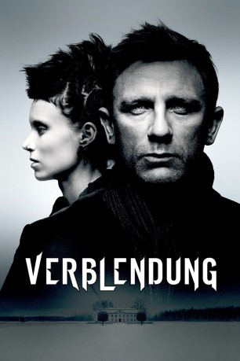
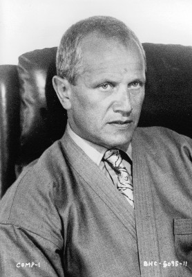
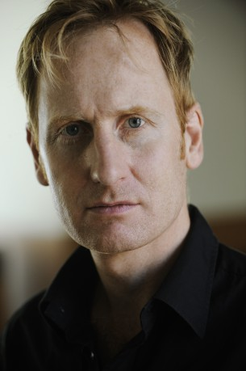
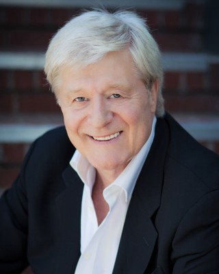
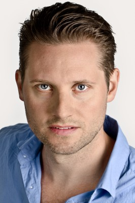
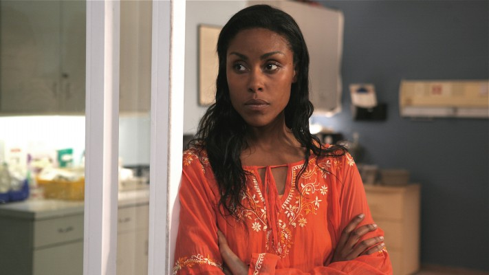

#2270 Verblendung
Alternativ: The Girl with the Dragon Tattoo
Auszeichnungen: 1 Oscars gewonnen für 4 Oscars nominiert
 
 IMDB-Wertung: 7.8 / 10
IMDB-Wertung: 7.8 / 10  Metascore: 71
Metascore: 71 
Gerade hat Mikael Blomkvist, Aushängeschild des Enthüllungsmagazins Millennium, eine bittere juristische Niederlage erlitten. So nimmt er das lukrative Angebot eines schwedischen Industriellen an, den Fall von dessen seit 40 Jahren spurlos verschwundener Großnichte zu klären. Die Ermittlungen führen den Journalisten ins vergiftete Herz einer Großfamilie, aber auch an die Seite der smarten Punk-Hackerin Lisbeth Salander, die nach traumatischen Erfahrungen rotzig und abweisend wirkt, aber mit Blomkvist ein schlagkräftiges Team bildet.
Jahr: 2011
Dauer: 158 Minuten
FSK: 16
Land: USA Studio: Columbia PicturesTonspuren: DTS-HD - ,
Untertitel: Deutsch, Englisch,
Auflösung: 1080p (1920x800) Größe: 11468 MB
Genre: Krimi, Drama, Mystery, Thriller
Regisseur:  David Fincher
David Fincher
Drehbuch: Steven Zaillian, Stieg Larsson
Soundtrack: Trent Reznor, Atticus Ross
Darsteller:
 Daniel Craig als Mikael Blomkvist
Daniel Craig als Mikael Blomkvist Rooney Mara als Lisbeth Salander
Rooney Mara als Lisbeth Salander Christopher Plummer als Henrik Vanger
Christopher Plummer als Henrik Vanger Stellan Skarsgård als Martin Vanger
Stellan Skarsgård als Martin Vanger-  Steven Berkoff als Frode
 Robin Wright als Erika Berger
Robin Wright als Erika Berger Yorick van Wageningen als Bjurman
Yorick van Wageningen als Bjurman Joely Richardson als Anita Vanger
Joely Richardson als Anita Vanger Geraldine James als Cecilia
Geraldine James als Cecilia Goran Visnjic als Armansky
Goran Visnjic als Armansky Donald Sumpter als Detective Morell
Donald Sumpter als Detective Morell- Tony Way als Plague
 Julian Sands als Young Henrik
Julian Sands als Young Henrik-  Gustaf Hammarsten als Young Harald
 David Dencik als Young Morell
David Dencik als Young Morell-  Martin Jarvis als Birger
-  Anders Berg als Young Frode
- Sandra Andreis als Photo Editor
 Arly Jover als Liv
Arly Jover als Liv- Alastair Duncan als Greger
 Alan Dale als Detective Isaksson
Alan Dale als Detective Isaksson- Julia Rose als Nurse
 Matthew Wolf als Tech Clerk
Matthew Wolf als Tech Clerk Leo Bill als Trinity
Leo Bill als Trinity- Christian Heller als Banker
-  Christine Adams als Barbados TV Reporter
- Peter Hottinger als Zurich TV Reporter
- Joyce Giraud als Spain TV Reporter
 Elodie Yung als Miriam Wu
Elodie Yung als Miriam Wu Embeth Davidtz als Annika
Embeth Davidtz als Annika Joel Kinnaman als Christer Malm
Joel Kinnaman als Christer Malm- Karen E. Wright als Magda Lovison
- Leah Shaw als Book of Death Victim
- George Gerdes als Udevalla Detective
- Magnus Af Sandeberg als Mr. Brännlund , uncredited
- Melissa Ciesla als Mari Holmberg , uncredited
- Laurence Fuller als Hospital Visitor , uncredited
- Henry Hereford als Lars , uncredited
- Darri Ingolfsson als Karlstad Police Officer , uncredited
- Maja Kin als Young Mrs Brunnlund , uncredited
 Christopher Maleki als Hanzel , uncredited
Christopher Maleki als Hanzel , uncredited- Cate Montgomery als Liv 'Eva' Gustavsson, Murder Victim , uncredited
- Alessandro Piersimoni als Annika's Husband , uncredited
- Sahlima als Flight Attendant , uncredited
- Lennart B. Sandelin als Lawyer , uncredited
- Yasmine Vine als Assyrian Immigrant , uncredited
- Mike Zehr als The Locksmith , uncredited
- Ulf Friberg als Wennerström
- Bengt C.W. Carlsson als Palmgren
- Per Myrberg als Harald
Datei: X:\2011(N-Z)\Verblendung (2011, FSK16, 1920x800).mkv seit 25.10.2015
Festplatte: HD 2011(G-Z)
 Es gibt insgesamt 132 Filme in der Gruppe '2011(N-Z)'
Es gibt insgesamt 132 Filme in der Gruppe '2011(N-Z)'